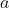
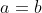
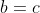
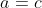

2.2 从部分推整体：归纳与演绎
统计方法的一个基本特点，是它有“从部分推断整体”的性质。这是一种在对有关信息缺乏完全掌握的情况下，去进行推断的方法。由于这个原因，它不能担保所得结论一定准确无误，而是容许结论可能出错或有误差。好的统计方法的主要标志，就是它出错的机会较小，产生的误差一般较小，但不可能完全避免误差。上一节天平称钻石的例子中，我们曾提到两种可用的统计方法，一是用算术平均，一是用中位数。在一定的条件下前者优于后者，甚至可证明，前者是一切方法中的最优者，但也不能避免有误差。
部分推断整体的特点，在抽样调查中看得很清楚。一个群体（人群或任何同类对象，如工厂、学校等由个体组成的集体），在统计学上称为总体（也称为母体），它由大量个体组成。我们所想要了解的，是该群体作为一个整体的某项指标或性质，而并非要去一一细究全部个体的状况如何。典型的例子是上一节所讲的一省农民的平均收入。“平均收入”是一个整体性质，用统计学的语言说，是一个总体指标。我们抽取该省一部分农民——在统计学上称为样本或子样，所抽出的农民人数称为样本量——做调査，而有关总体指标（即全省农民平均收入）的结论，即依这一部分的情况做出。所有抽样调查的研究全是这种情况。
当数据是由试验产生时，例如天平称钻石的情况，“部分推断整体”的表现不如上例明显，不易看清楚该如何理解，乍一看，钻石的重量（记为

， 未知）是推断的对象，似乎就是整体。但何谓部分？我又没有把这颗钻石一分为几，不可能考察其部分。这就需要有一种特殊的理解方式，起初一看觉得是人为的做作，其实是属于统计学中很自然的理解，它具有极大的普遍性，可以涵盖一切类似的情况。让我们来费一点儿口舌细加解释。如前所说，我们对该钻石称了 5 次，得到 5 个数据。如觉得必要，我们可以利用该天平把钻石继续称下去，原则上说愿意称多少次就可以称多少次。这一想象中的称量，如真的加以实现，会产生极大量的数据，我们把这想象中的极大量数据构成的群体认作问题的整（总）体，而实际已做的 5 次称量所得的数据，则是此整体的一部分，这样就把问题归到与上例一样的模式中。但还有一个问题要解决：我们的命题是由部分去推断整体的某项特征，它与估计钻石的重量如何联系起来？这要用到上一章讲过的大数定律，这极多次的称量结果的平均值，会等于（或极其接近于）钻石的精确重量 。故我们要推断的对象 ，确是我们所想象中的这个整体的一项特征，因而仍符合“部分推断整体”的提法。1 掌握了这个例子的精神，其他由试验产生数据的情况，都容易按此进行解释。其要点是：想象把已做的试验继续重复做下去，从而产生一个包含极大量数据的总体，已有的试验数据是这总体的一部分，而我们关心的（需要对之进行推断的）对象，则可以解释为是这个想象中的总体的一个特征。
1为便于读者的理解，此处采用了一种较为形象的解释方法，因而不甚符合严格的统计学理论规范。更确切的解释是：一切可以想象的称量值的全体有一定的概率分布，而钻石的真正重量则是该概率分布的期望值。
把上述两例比较，可看出其明显不同的特点。在抽样调查的场合，个体是“看得见，摸得着”的实在（如一个农民），且总体所含个体数是有限的。在试验的场合，个体并不是预先就以实体的形式存在，而是“试验一次，产生一个”，且总体在想象中包含无穷多的个体。这样的差别，导致两种情况的统计分析方法有所不同。乍一看会觉得，前一种情况较易处理，其实不尽然。在数学中存在大量的情况，其中处理无限比处理有限反而更方便，以至作为一种近似，常把有限当作无限处理。事实上，当一个群体足够大时，将其作为无限群体去处理，在统计分析上可以使用一些针对无限总体的、更精细的方法，因而更为方便和有效。
统计方法的“部分推断整体”的性质，引出一个重要之点：统计方法是一种归纳性质的方法，统计推断是一种归纳推理。我们知道，推理的方法可以分成两大类：演绎法和归纳法。演绎法是用逻辑推理的方式，从一些被承认为公理的前提（如部分大于整体，若

，
，则
之类，以及适用于某一特定领域的被承认的前提，如牛顿三大定律，可视为牛顿力学的公理）出发，推证出一些结论，其正确性依赖于所据公理的正确性。这些已被证明的结论，又可以作为证明其他结论的依据。一个大家都熟悉的例子是欧几里得平面几何，它从一些公理出发，推演出很多结论，如“三角形的 3 条中线交于一点”“三角形 3 个角的度数之和为 180°”之类。这种类型的演绎推理是纯思辨性的，不涉及物质世界，只要坚持公理体系的前提（认定公理体系的正确性），且在推理中未犯逻辑错误，没有引用错误的或未加证明的断言，则可以保证推理所得结论（在该体系下）的正确性。应当注意的是，在一定限度内，所谓公理也是出于人造，并无“天然正确”的品格。例如大家在中学学习的平面几何公理体系中，有所谓“平行公设”（欧几里得第五公设），即过直线外一点有一条且只有一条直线，与该直线平行。“三角形 3 个角度数之和为 180°”这一结论，就是在平行公设（及欧氏几何的其他公理）的前提下证明的。在高等数学中，有一种几何学叫作罗巴切夫斯基几何，该几何学中有一条公理是：过直线外一点可以作两条不同的直线，都与该直线平行。在这种几何学中，三角形 3 个角的度数之和已不再是 180°，因为前提变了，结论也跟着改变，这些都合乎逻辑，没有矛盾。
在现实世界中，这种演绎式的推理也很常见。有一些著名的例子，例如 1919 年观测到太阳光线经过水星引力场时要发生弯曲，这本是根据爱因斯坦相对论所推演出的结论。与上述数学演绎推理不同的是，在物质科学中，演绎结论不能视为当然成立，还须经过试验验证，而经过试验验证，反过来支持了所据理论的正确性。小至日常生活，我们也常做演绎推理。例如判断一个我们并无直接接触的人的素质如何，可以根据他的家庭背景、所受教育、工作经历和社会关系等因素。这在广义的意义上说也是一种演绎推理，不过具有更粗疏的性质，也没有无懈可击的逻辑性。其正确性如何，仍需要通过亲自与该人接触才能确信，这也是一种试验验证。许多创造发明的起点中，都包含有这种松散的演绎性推理。例如设计治某一疾病的药物，可以是根据病理学的分析及某种物质的化学性质和生理作用，推测该药物应有疗效，但究竟如何，不能据此定论，还须经过严格设计的临床试验。
与演绎推理相反，归纳推理是由总结若干个别事例而做出的一般性结论。例如，你与某人打过若干次交道，发现他在与你共事时按正道行事，于是你做出他“为人正直”的结论。
这是你归纳若干事例（可解释为观察或试验结果）而引申的结论。它在逻辑上并非无懈可击（且实际上也未必尽然），因为你是“由部分推断整体”——你并不了解他的全部情况。实用科学中的许多结论，都是根据一定的观察试验结果得出，都属于归纳性的结论。在许多情况下，观察或试验结果受到偶然性因素的影响而带来一些不定因素。统计方法的作用，正是在这种情况下，帮助人们做出尽可能正确（在数据所提供的信息的限度内）的归纳。因此，统计性的推理是一种归纳推理。
从现实世界的角度看，作为推理方法，归纳高于演绎。不仅在许多情况下思辨或理论推理不可行而只能诉诸试验，即使在演绎推理可用的场合，其结论仍须经过试验即归纳的验证。这也就是我们常说的“实践是检验真理的唯一标准”。由此也可以看出统计方法对于认识和改造世界的重大意义。